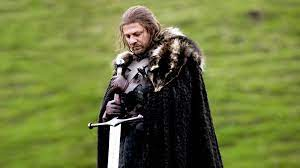
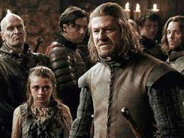
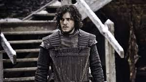
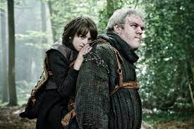
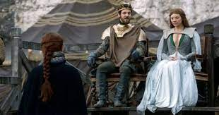

Game of Thrones

It borders on cliché that writers tend to metadiscursively tout the importance of storytelling at critical moments. Tyrion’s speech about the importance of a good story in choosing a king in the final episode of Game of Thrones may as well be Benioff and Weiss’ winking plea that the audience trust their judgement. Many are disinclined to do so after a season that was poorly paced and often gave viewers whiplash with the rapid introduction and dissolution of major plots within the course of an episode. But I will cut to the chase and say that in the end, I loved the finale of Game of Thrones. It took its time and did its best to pull out of the nosedive that many viewers assumed it was in, and—whether or not you feel that Benioff and Weiss earned the trust they solicited in Tyrion’s speech (I myself am very skeptical)—the point they make about the importance of storytelling stands, not just as a pat on the back that privileges writers as the ultimate power-brokers of the human experience, but within the actual narrative: what kind of stories matter and what kind of stories ought to matter in a world like Westeros where power structures are built on the post-hoc justification of conquest? As it turns out, Game of Thrones values, as it always has, stories about the futility of justification.
As the first episode of the series, it introduces the setting and the main characters of the show. The episode centers on the Stark family, and how Ned Stark gets involved in the court politics after the king chooses him to replace his recently deceased chief administrator
Arya throws the prince's dropped sword into the river and runs off into the forest, where she orders Nymeria away, knowing that she'll be killed for biting Joffrey. The Lannisters' men find Arya in the forest that night and bring her to stand before the king and queen.
Ned returns to his chambers to find Sansa and Arya fighting. Sansa rejects the doll he brings her as a gift, and when he checks in on Arya in her bedroom, she's holding her sword, Needle. She tells her father she asked Mycah to practice with her, and now the boy is dead.
Tyrion arrives in King's Landing to counsel Joffrey; Stannis Baratheon plots an invasion to claim his late brother's throne; Daenerys and her three dragons search for allies and water; Bran presides over a threadbare Winterfel
Arya Stark travels up the Kingsroad with a ragtag group of Night's Watch recruits, led by Yoren. When gold cloaks approach their camp, she immediately hunkers down, fearing that they're searching for her, but it turns out the men have been sent for Gendry, one of the sole surviving bastards of Robert Baratheon.
Balon Greyjoy plans war on the North with Yara, who tells Theon he must choose between the Starks or the Greyjoys. Theon considers warning Robb Stark, but decides to serve under his father.
As the first episode of the series, it introduces the setting and the main characters of the show. The episode centers on the Stark family, and how Ned Stark gets involved in the court politics after the king chooses him to replace his recently deceased chief administrator
Arya throws the prince's dropped sword into the river and runs off into the forest, where she orders Nymeria away, knowing that she'll be killed for biting Joffrey. The Lannisters' men find Arya in the forest that night and bring her to stand before the king and queen.
Ned returns to his chambers to find Sansa and Arya fighting. Sansa rejects the doll he brings her as a gift, and when he checks in on Arya in her bedroom, she's holding her sword, Needle. She tells her father she asked Mycah to practice with her, and now the boy is dead.